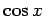
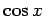

Integrale trigonometrischer Funktionen
(Integrale von Funktionen, die neben Hyperbel- und Exponentialfunktionen auch die Funktionen  und  enthalten sind in den Tabellen Integrale anderer transzendenter Funktionen aufgeführt.)
und  enthalten sind in den Tabellen Integrale anderer transzendenter Funktionen aufgeführt.)
- Integrale mit Sinusfunktion, Nr. 274 bis 281
- Integrale mit Sinusfunktion, Nr. 282 bis 289
- Integrale mit Sinusfunktion, Nr. 290 bis 296
- Integrale mit Sinusfunktion, Nr. 297 bis 304
- Integrale mit Sinusfunktion, Nr. 305 bis 312
- Integrale mit Kosinusfunktion, Nr. 313 bis 320
- Integrale mit Kosinusfunktion, Nr. 321 bis 328
- Integrale Kosinusfunktion, Nr. 329 bis 336
- Integrale mit Kosinusfunktion, Nr. 337 bis 344
- Integrale mit Kosinusfunktion, Nr. 345 bis 353
- Integrale mit Sinus- und Kosinusfunktion, Nr. 354 bis 360
- Integrale mit Sinus- und Kosinusfunktion, Nr. 361 bis 368
- Integrale mit Sinus- und Kosinusfunktion, Nr. 369 bis 376
- Integrale mit Sinus- und Kosinusfunktion, Nr. 377 bis 384
- Integrale mit Sinus- und Kosinusfunktion, Nr. 385 bis 391
- Integrale mit Sinus- und Kosinusfunktion, Nr. 392 bis 399
- Integrale mit Sinus- und Kosinusfunktion, Nr. 400 bis 408
- Integrale mit Tangensfunktion, Nr. 409 bis 417
- Integrale mit Kotangensfunktion, Nr. 418 bis 425